| |
Первая статья из цикла статей по системам
обновления и установки програмного обеспечения в Red Hat
Linux. В статье рассматривается система Ximian Red
Carpet 2.
1. Введение
Ребята из Ximian
Inc. делают столько всего полезного для сообщества
(и для меня в том числе), что переоценить их труд
невозможно - он огромен. Самое известное их творение
почтовый клиент Ximian Evolution (аналог MS Outlook).
Помимо крутого почтового клиента, они также сделали
довольно известную систему обновлений для RedHat Linux -
Ximian Red Carpet.
Системе уже пара лет (а может и
больше), за это время исправлялись различные ошибки,
добавлялись новые фичи, а сейчас Ximian готовит новую
версию системы Ximian Red Carpet 2. Он ней собственно и
пойдет речь.
Установить redcarpet можно скачав его со страницы
http://www.ximian.com/products/redcarpet/download.html.
Сейчас вы скачаете redcarpet версии 1.3.x, затем, когда
вы запустите эту программы пользователем root, вам нужно
будет подписаться на канал redcarpet и скачать
develop-ерскую версию 1.9.x
2. RCD - Red Carpet Daemon
Итак предположим вы всеми правдами и неправдами
скачали и установили Red Carpet 2. Что делать
дальше?
На самом деле у вас установлено две
программы: 1-ая rcd - демон (сервис), который скачивает
и устанавливает приложения и 2-ая - red-carpet, красивая
клиентская программа, с помощью которой вы сможете легко
управлять демоном rcd. rcd - теперь стандартный сервис
вашей системы, а значит, вы можете его
запускать/останавливать/перезапускать командами
# service rcd start
# service rcd
stop
# service rcd
restart
соответственно. Также можно
конфигурировать автозапуск этого демона через
стандартную redhat-овскую консольную утилиту setup
(нужно зайти в System Services). Запускаем
демон:
# service rcd start
и переходим к
пункту 3.
Вполне возможна ситуация, когда ваша
рабочая машина находится за файрволом или
прокси-сервером. В первом случае вам придеться просить
администратора открыть соответствующий порт на файрволе,
а во втором перед запуском rcd отредактировать файл
/etc/ximian/rcd.conf, добавив в него строку:
[Network]
proxy=http://192.168.0.1:3128
в моем случае я указал адрес прокси сервера как
192.168.0.1 и порт 3128, но в вашем случае может быть
совершенно другой адрес. Теперь можно смело
перезапустить демон rcd:
# service rcd
start
и переходить к пункту 3.
3. red-carpet - клиентская программа
Теперь самое интерсное для сисадмина - программа,
разруливающая демоном rcd, red-carpet.
Запускаем ее
из-под root-а омандой:
red-carpet
В
результате (если все нормально) получаем нечто
вроде:
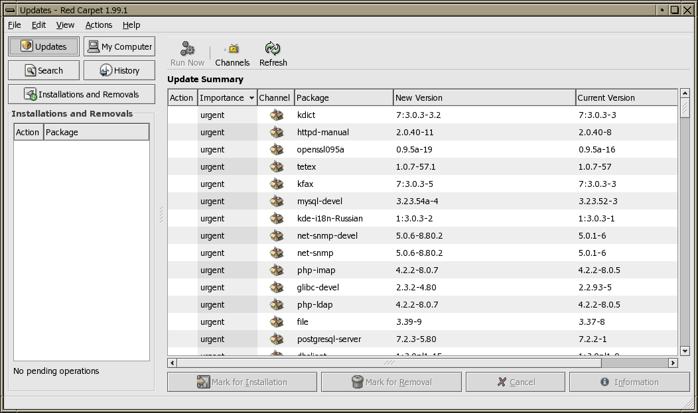
Что именно у вас появится во многом зависит от
того на какие каналы вы подписаны. Что это значит?
Программное обеспечение в red-carpet разбито на
тематические каналы, в которых находится разный софт.
Чтобы посмотреть на какие каналы вы подписаны или
подписаться нажмите кнопку Channels:
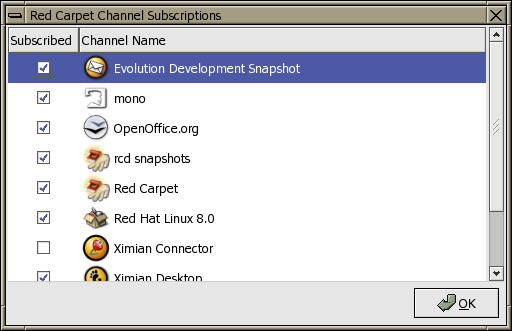
В этом окне нам
нужно подписаться на интересующие каналы. После того как
мы выбрали, нажимаем OK и затем в окне red-carpet
нажимаем кнопку Refresh, и ждем пока скачается
информация по интересующим нас каналам. В итоге получим
то, что было изображено на первом рисунке. Теперь
давайте попробуем что-нибудь установить. Лично мне
интересно скачать последнюю девелоперскую версию
evolution-1.3 - ставим а поле Action напротив
соответсвующего пакета что-то вроде галочки:
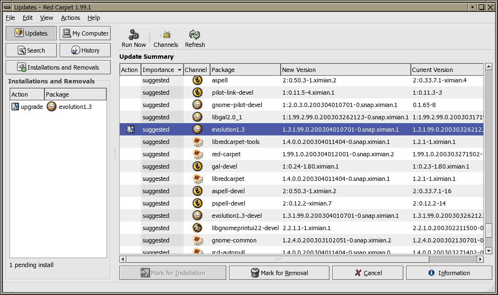
Интересующиеся могут посмотреть информацию об
этом пакете (что из себя представляет пакет, какие у
ниго зависимости от других пакетов и т.д.), нажав на
кнопку Information в правом нижнем углу окна :
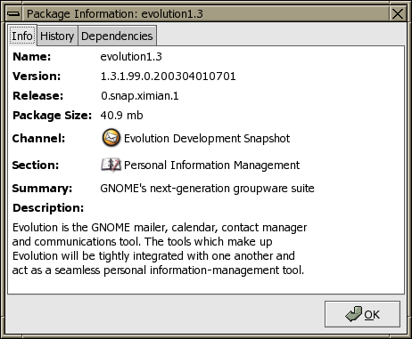 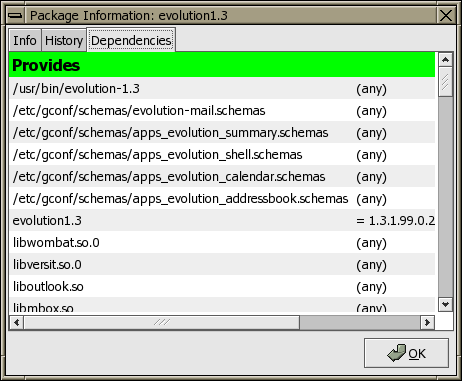
После того как мы
выбрали все интересующие нас пакеты и посмотрели всю
интересную и неинтересную информацию смело жмем кнопку
Run Now и попадаем в экран, где нам предлагают,
где red-carpet сообщает о том, какие пакеты вы выбрали,
какие пакеты необходимо еще скачать, чтобы удовлетворить
зависимости, какие пакет в результате этого будут
удалены:
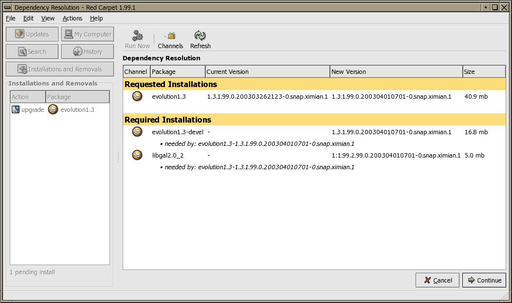
Посмотрели, почитали, подсчитали, прослезились и
продолжили. Деваться некуда, софт поставить то хочется -
пускай удовлетворяет все зависимости - жмем кнопку
Continue - появляется индикатор "сколько
скачалось" с прыгающей вокруг компьютера обезьяной
(символом Ximian Inc):
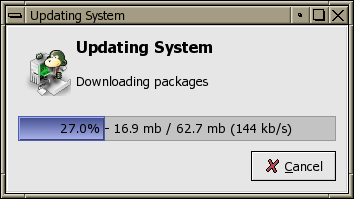
После того как
все, что нужно скачается, обязьяна сообщит о том, что
идет установка таких-то пакетов:
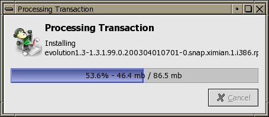
В итоге мы только
что установили(обновлили) все что хотели:
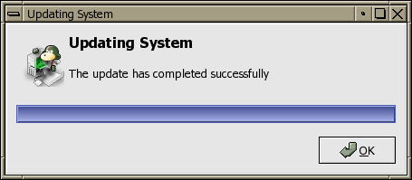
Однако, как
говорилось в культовом мультфильме, "маловато будет!
Маловато!". RedCarpet позволяет не только работать с
каналами, но и удалять имеющиеся пакеты из системы. Для
этого потребуется всего лишь нажать на кнопку в левом
верхнем углу окна программы My Computer после
чего нам покажут все установленные пакеты а также дадут
возможно искать пакет по ключевому слову:
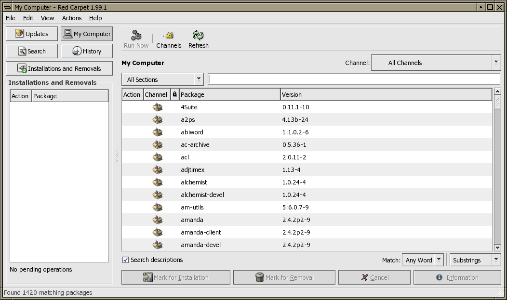
В моем случае я
заметил пакет с названием alchemist-devel. Не знаю, что
такое alchemist, но твердо уверен, что заниматься
разработкой его я не буду никогда в жизни, поэтому я
выделяю его мышкой и нажимаю на кнопку Mark for
Removal (Отметить на удаление) после чего жму на
кнопку Run Now и попадаю в экран, где меня
предупреждают о том, что я собрался делать:
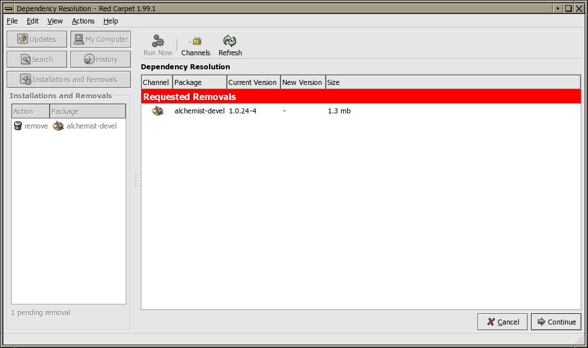
Уверены? Об чем
речь, не хочу программировать алхимика ни за какие
коврижки! Жмем Continue после чего обезяьна опять
начинает прыгать и сообщать о том, что все прошло
успешно:
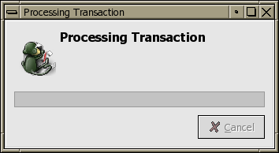
Еще хотелось бы упомянуть о весьма полезной
новой фичи - Истории того, что вы творили посредством
red-carpet. По-моему иногда эта штука может пригодиться:
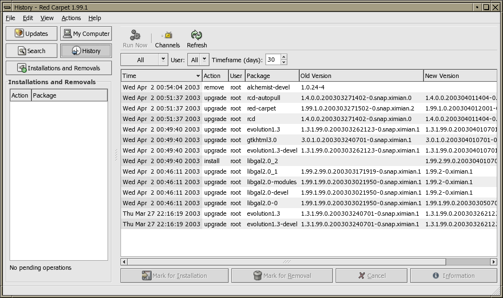
И
напоследок. Red Carpet 2 имеет довольно удобный
интерфейс настроек, через который можно в том числе
сконфигурировать прокси-сервер:
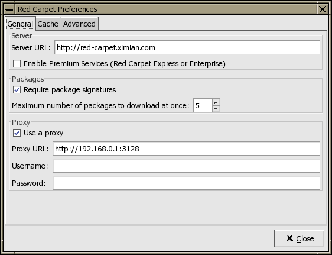
4. Заключение
По-моему Ximian Red Carpet представляет из себя
удобную, практически идеальную систему обновлений. Скажу
больше для меня - эта система вообще места. Все удобно,
логично. rcd позволяет автоматизировать многие вещи.
Однако, нужно заметить, что через каналы Ximian Red
Carpet можно получить и обновить только довольно
ограниченное количество софта. Иногда хочется поставить
те пакеты, которые отсутствуют в его каналах. Поэтому в
следующей статье я расскажу о системе APT, которая
довольно неплохо может дополнить Ximian Red Carpet.
|
|